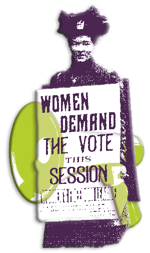
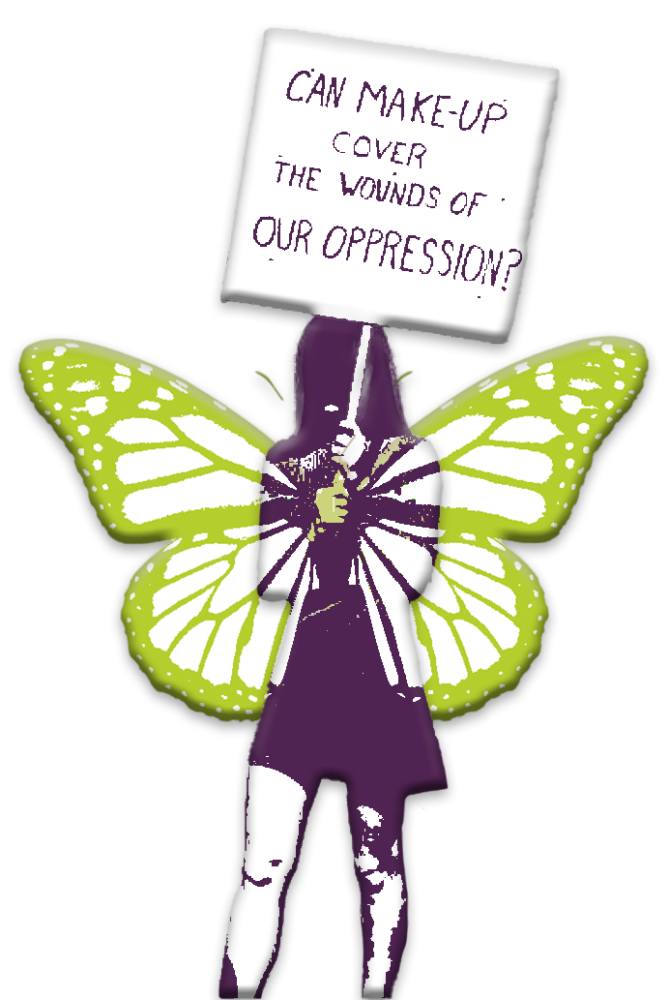

-
Feminism Waves
-

A protesting women holding a sign that says “Women demand the vote this session.” In a different colour and light opacity a mega phone is cover het sign. The First Wave
The first thing you need to know about the waves Is that there is not a beginning and end date for the movements. These waves are estimates of the general time period and the goal of the movement at that time. So, with this information let’s get started.
The first wave of feminism started in the mid to late 19th century, reaching all the way to the beginning of the 20th.
The first women’s right conventions were held in 1848 in New York called the Seneca Falls Convention. Over the course of two days, hundreds of people discussed the rights of women, in all aspects, may that be social, economic or religious.
One of the most widely known movements are the suffragettes, who were a part of the Women's Social and Political Union. This organisation was founded in the United Kingdom as a part of the National Union of Women's Suffrage Societies (NUWSS), however this movement was blooming all over the western world at that time. The general focus of this wave was to gain the legal rights for women to vote.
While New Zealand had been in the lead with giving women over the age of 21 the right to vote all the way back in 1893, it was finally time for the west to catch up. Near the end of the first wave the US and UK changed its law which enables women to vote in 1920 and 1928 respectfully. Within the time frame more countries follow the course. With this success the law changes, the wave began to calm, waiting for the next one to come along.
With these changes the groundwork was laid for the next waves.
-
The Second Wave
With the succession of gaining the right to voting, the foundation of women’s rights had been laid. After that the movement had begun to slow down up until the 1960s when the second wave started to rock the boat.
While the world was settling into the adjustment of women’s rights, the time had come to push the next boundary set for women. This wave played a central role in changing women's social and economic freedom.
It was finally time to continue building on the foundation set a few decades before. The main principles of the second waves were to gain autonomy. Women wanted more control over their own lives and bodies, with the most radical goal of the time was to gain reproductive rights, this included safe access to abortions and better contraceptives.
Big influences of this wave consist of two books that were published in that time. The book "The Second Sex" published in 1949 by the French writer and feminist, Simone de Beauvoir. This philosophical book challenged the idea that men are the default gender, and women are “the second”, there for lesser, sex.
Another big influence on this second wave was written by Betty Friedan and published in 1963, called "The Feminine Mystique." This book discussed the traditional domestic roles women held and whether this was actually fulfilling for all women at that time or that there was more ambition to them.
This happened all after the second world war women were forced to go back to the set ‘traditional’ rolls after they stepped in while the men were off to the front lines, realizing they were much more than just a wife or mother. And so, the second wave finally began to change the world.
So, while the on the surface it might not sound like a lot needed to change, women had voting rights, that was what they wanted. But if you look deeper the next challenge rose. Women might have the right to vote but there were no laws to protect them. This was another main goal, women wanted autonomy and protection from things like domestic abuse. Especially after the wars, women knew they were just as capable as men when it comes to jobs, women just needed to come out of the shadows of men.
Slowly, and with enough protest, through media and literacy these demands of equality became reality. In the US major legislations were passed including equal pay for work and anti-gender-based discrimination in 1963 and in 1973 legalized abortion with the rights for bodily autonomy.
And this the second wave the second wave faded away.
A protesting women holding a sign that says “repeal abortion laws N.O.W.” The women stands on a greek style pillar which is a different colour. -

A protesting women is holding up a sign that says “can make-up cover the wounds of our opression?” In another colour she has butterfly wings on her person. The Third Wave
In the previous decades, society has undergone major changes and women had more rights than ever. The new generation was able to enjoy this newfound freedom, but it isn’t over yet.
In the early 1990’s this new generation had critique on the previous waves and this time it went deeper into the layers of what equality and feminism actually meant. They had the legal rights but were still subjected to sexism, racism and classism. And so, the third wave emerged, the fight for more than just legal rights, but change the social structure of what came with these rights. This also included taking back the empowerment and celebration of womanhood.
During this wave feminism became more inclusive and the term ‘intersectional feminism’ was coined. Intersectionality means that the bases of aspects, including but not limited to, race, sexual orientation or religion, are not separate social structures but influence each other and create different perspectives. To feminism it would mean that everyone, depending on someone’s own aspect, experiences oppression and gender discrimination differently.
The nineties were a time of punk rock and hip-hop culture which had a big influence on the feminist movement. In these trends individualism and diversity were a core part of the community. This reinforced the message of intersectional feminism and brought it to a broader audience.
In 1993 at World Conference on Human Rights, women’s rights were finally declared human rights. And that the third wave came to it’s end.
However, the fight for feminism not over, but there is hope yet. While there are more and more laws that protect not just women but everyone against racism, classism, sexism and way more.
We have to remember that just because we have rights today that does not mean we will continue to have rights tomorrow.
- Previous page Next page